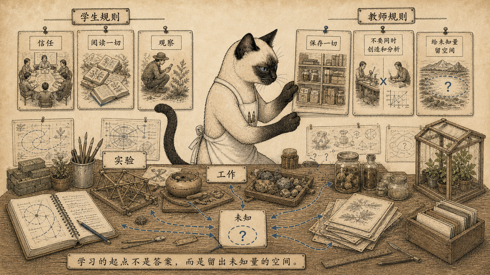
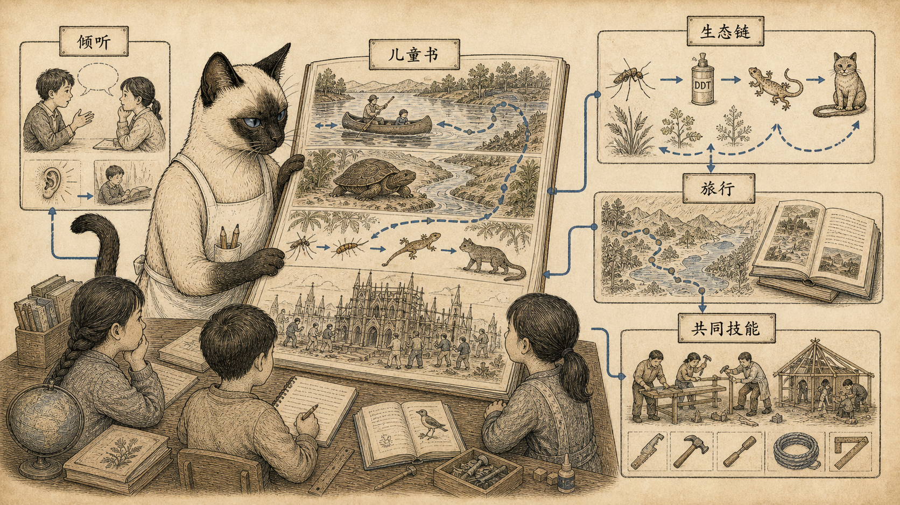
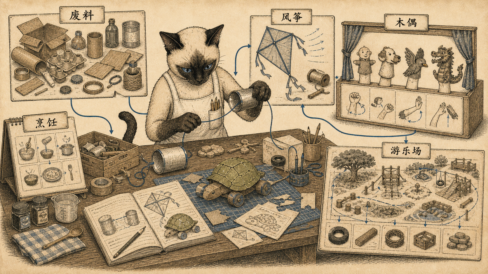
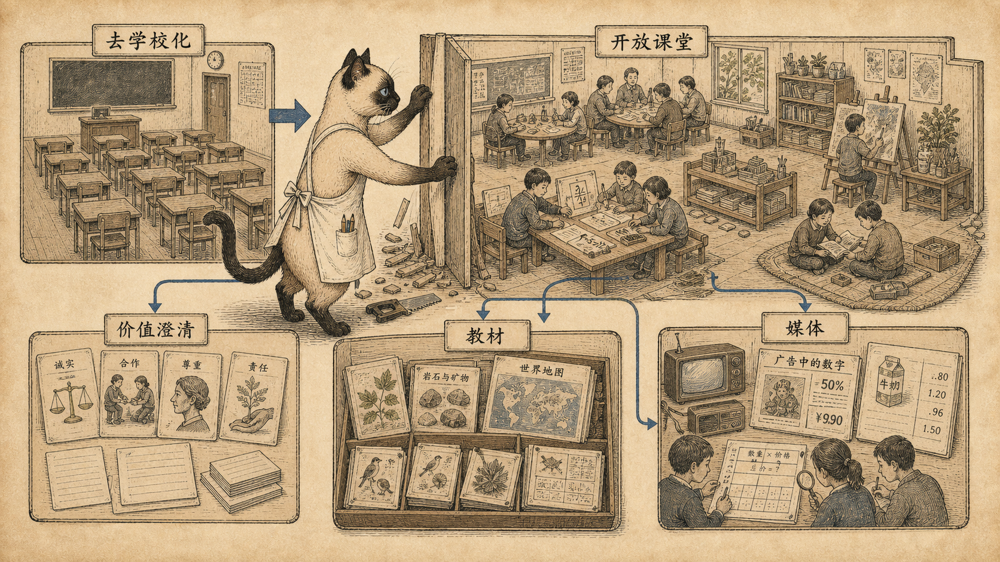
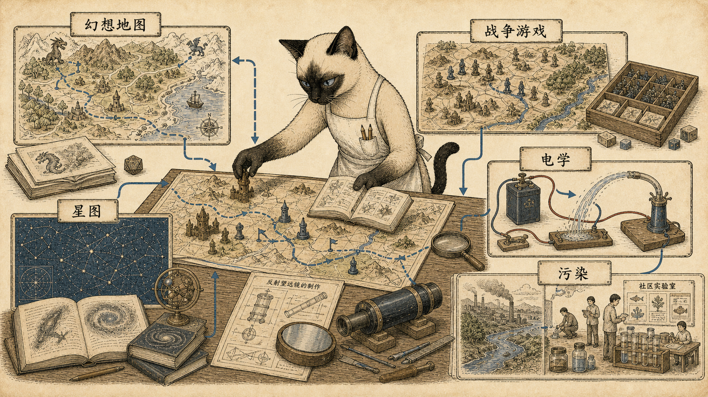
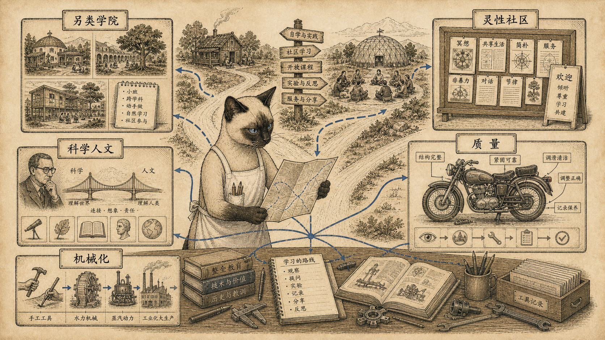
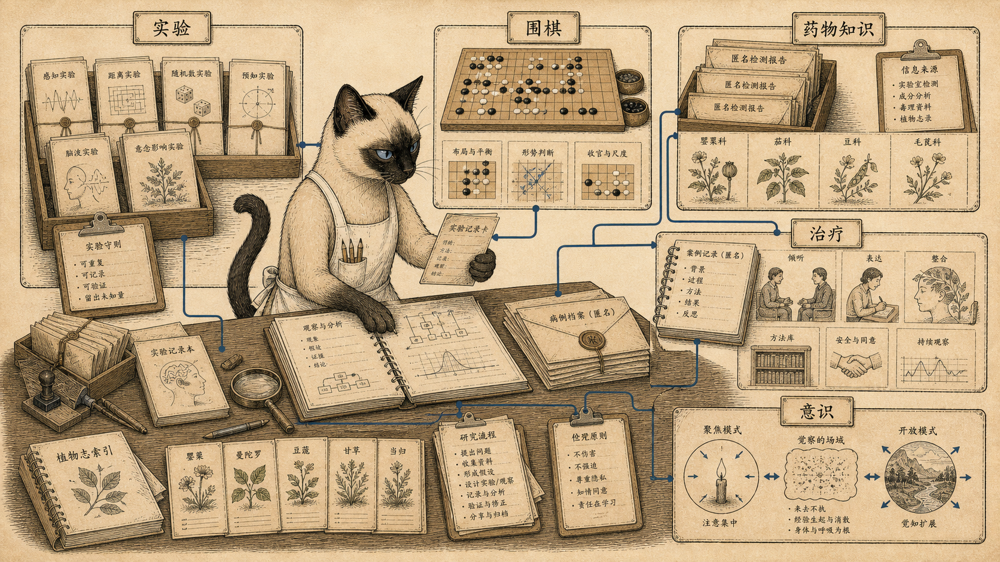
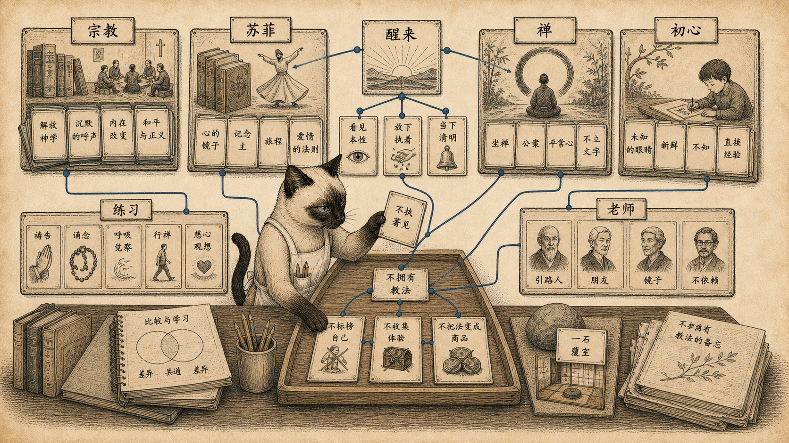
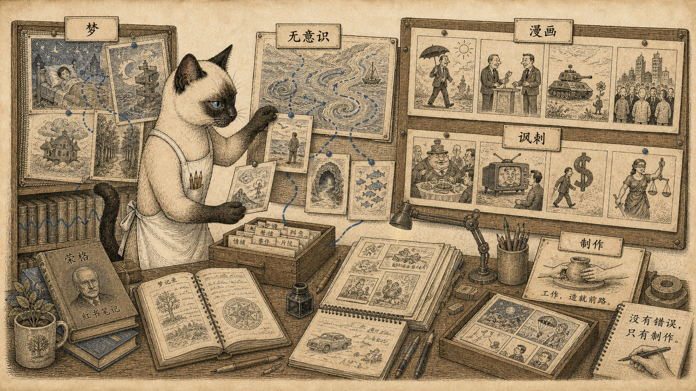

模块 01
学习规则：给未知量留空间
没有错误，只有制作；唯一规则是工作，工作会带来东西。
先看图：工作台、规则卡和未完成物件被蓝线连起来。这里的学习不是吸收知识，而是在场、试验、保存、看电影、读任何能拿到的东西。
有趣的是：规则里有一句很硬：不要同时创造和分析。它不是反智，而是承认制作和判断常常需要不同的时间。
为什么重要：“打破规则，甚至自己的规则”，不是随便乱来，而是给未知量留下空间。学习先要让结果不被过早关死。
这一章从学生和教师规则开始：把一切看成实验，没有错误，只有制作；唯一规则是工作。接着它进入育儿、儿童书、玩具、风筝、木偶、游乐场、去学校化、开放课堂、幻想地图、战争游戏、星图、电学、污染实验、另类学院、摩托维修、围棋、药物知识、治疗、宗教、禅、荣格和漫画。
它真正反对的不是学校本身，而是把学习外包给学校。学习在这里是一种进入世界的方式：进入材料，进入他人经验，进入身体技巧，进入注意力，进入错误，进入工作。
信任一个地方、拉出彼此的东西、保存材料、做玩具、让身体进入游戏，这些都比“上课”更早。

没有错误，只有制作；唯一规则是工作，工作会带来东西。
先看图：工作台、规则卡和未完成物件被蓝线连起来。这里的学习不是吸收知识，而是在场、试验、保存、看电影、读任何能拿到的东西。
有趣的是：规则里有一句很硬：不要同时创造和分析。它不是反智，而是承认制作和判断常常需要不同的时间。
为什么重要：“打破规则，甚至自己的规则”，不是随便乱来，而是给未知量留下空间。学习先要让结果不被过早关死。

孩子不是被管住才会学；他们通过被倾听、反复阅读、生态故事和共同建造进入世界。
先看图：主动倾听、穿越五大湖的小木舟、龟的河流旅行、婆罗洲滴滴涕生态链和哥特教堂建造，被折进一本打开的书。
有趣的是：《父母效能训练》说，每次父母用权力迫使孩子做事，都剥夺了孩子学习自律和自我责任的机会。
为什么重要：《大教堂》让孩子看见奇迹背后的测量、采石、挖基、立柱、做拱、安玻璃和铸钟。学习从“哇”走向“怎么做到”。

废料、风、手、厨房和游乐场，都是学习媒介。
先看图：管子电话、纸板乌龟、风筝升线器、木偶手腕动作、图示食谱和游乐场材料地图被放在同一张玩具工作台上。
有趣的是：纸板乌龟游戏简单到惊人：剪一只乌龟，穿线，拉紧，放松，乌龟就向前扑。三只一起就能比赛。
为什么重要：《为游戏而设计》反驳“玩只是消耗精力”。玩本身就是儿童智力发展的核心条件，空间和材料决定了能学到什么。
去学校化、开放课堂、幻想地图、战争游戏、星图、电学和污染实验，把学习从制度里拆出来，放回可操作的世界。

学校的存在会制造对学校教育的需求；学习要先从这个等式里挣出来。
先看图：固定课桌被拆成价值澄清、开放课堂、教师家长孩子入门册、《种子目录》和广告计数练习。教材变成能引发活动的一切。
有趣的是：媒体教育要求学生数一天遇到多少广告和劝服信息，从牙膏到路牌都算，数字可能到三百。媒介环境突然变得可见。
为什么重要：伊利奇的正面方案未必现成，但他让人不能再舒服地把学校等同于学习。这一点已经足够锋利。

幻想地图、战争游戏、星图、电学和污染实验，都把世界变成可测试的模型。
先看图：幻想地理、地形游戏板、星图、手工望远镜、电池导线实验和社区污染样本被放在一张实验地图桌上。
有趣的是：用梳子摩擦后让细水流弯曲，魔法立刻变成电荷证据。《反污染实验室》则把科学带回社区污染源。
为什么重要：战争游戏不必只是好战，它也能让人具体理解冲突、规则、地形和后果。关键在于把抽象变成可检验结构。

真正的问题不是上不上大学，而是哪种学习还保留手、判断和质量。
先看图：非传统学院路线、灵性社区公告、科学人文桥、摩托维修质量图和机械化历史机器，汇到一张工作台。
有趣的是：德甘纳维达-奎扎尔科亚特尔大学接纳辍学者、移民、保留地孩子和走进校园的人。它不是典型大学，也无意服务典型大学生。
为什么重要：《禅与摩托车维修艺术》让技术问题打穿那种“只想潇洒看世界”的姿态。点火白金烧坏时，世界观要面对机械现实。
《全球概览》把围棋、药物知识、治疗、意识、佛教、禅、荣格和漫画放进学习，是因为学习也发生在经验边界处。

越是争议和高风险领域，越需要实验设计、可靠信息、案例和清楚的意识模型。
先看图：实验卡、围棋盘、匿名检测报告、治疗案例本和两种意识模式图，被整理成一个克制的研究桌。
有趣的是：药物化学实验室提供匿名药物分析，并通过月报公布误标和掺假状况。这不是鼓励冒险，而是把谣言替换成信息。
为什么重要：奥恩斯坦区分语言、理性、顺序的意识模式，以及直觉、默会、弥散的另一种模式。学习不只发生在一种心智里。

这里的宗教不是身份展示，而是切开面具、醒来，并警惕把修行变成新占有物。
先看图：基督教激进神学、苏菲书目、佛教工具、禅中心、塔萨哈拉、初心和小石头，被放在一间安静阅读室里。
有趣的是：里克·菲尔兹写佛教像锋利又仁慈的工具：拆解、切开、揭下面具、破除神秘化，像闹钟一样叫醒人。
为什么重要：创巴踢掉“灵性物质主义”：宗教一旦被记住、占有、当成新身份，就会变成沉重负担。

学习也穿过梦、无意识、讽刺、荒诞和政治漫画，最后回到制作。
先看图：梦卡、无意识海流、震动书架、漫画分格和未完成图纸被钉在一张档案板上。严肃和荒诞没有被分开。
有趣的是：荣格的自传呈现一个人如何与科学、神话和无意识纠缠。读者未必接受每个现象，但能看见经验如何迫使思想变形。
为什么重要：丹·奥尼尔的漫画在章尾像一个提醒：学习不只在严肃书里，也在讽刺、失败、政治想象和继续动手里。